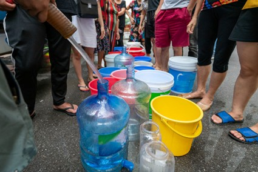

Desperdício de agua
O desperdício de água é um sério problema ambiental ocasionado pelo uso exagerado e pouco eficiente da água. Presente em maior ou menor escala em todos os países, o desperdício de água está associado também à ineficiência no transporte da água tratada, a problemas nas redes de distribuição e às atividades econômicas que mais fazem uso desse recurso natural, como a agricultura e a indústria. Somente no Brasil, país que detém o maior volume de água potável da América do Sul, perde-se 40% da água tratada durante a distribuição. Como consequência do desperdício de água, temos problemas de abastecimento, racionamento, maiores tarifas e prejuízos diretos para a saúde humana e para todas as formas de vida que dependem desse recurso.
Quais as principais formas de desperdício de água?
Convivemos diariamente com inúmeros exemplos de desperdício de água em diversos contextos e ambientes, desde nossas próprias residências e estabelecimentos locais até na realização de atividades econômicas. Confira, a seguir, alguns desses exemplos:
- Volumes excessivos de água utilizados em atividades como a irrigação de áreas cultivadas
e na produção industrial; - Banhos muito demorados;
- Lavagem de calçadas ou limpeza de carros com água corrente e mangueiras ligadas por
muito tempo; - Vazamento em tubulações na rede doméstica ou urbana;
- Torneiras abertas sem uso, como durante a escovação dos dentes.
Quais são as consequências do desperdício de água?
O desperdício de água pode acarretar sérias consequências no médio e longo prazo, sendo a principal delas o desabastecimento, ainda mais grave naquelas áreas que já sofrem com o estresse hídrico (a disponibilidade de água é menor do que a demanda). O desperdício e o uso não sustentável da água provocam o rebaixamento do nível dos reservatórios e ocasionam crises de abastecimento, que levam à imposição de medidas de controle, como o racionamento. Como resultado, o uso da água nas residências é limitado e a produção econômica sofre impactos diretos, com a redução do volume de água que pode ser utilizado.

Os cenários acima descritos, causados pelo desperdício, podem provocar aumento nas tarifas e no preço da água para consumo, além de encarecer produtos que dependem desse recurso para serem desenvolvidos. Há, além disso, prejuízos para a saúde humana e para a vida dos animais e plantas que dependem da água doce para a sua manutenção e sobrevivência.
Como evitar o desperdício de água?
A água doce, utilizada para o consumo humano, é um recurso bastante limitado no nosso planeta, pois representa somente 2% de todo o volume de água presente na Terra, e, desse, quase 70% estão congelados e represados nas geleiras. Por essa razão, é preciso evitar o desperdício de água e realizar o uso desse recurso natural de maneira sustentável.
Algumas ações que diminuem ou impedem o desperdício de água estão listadas a seguir:
- Inspeção periódica de encanamentos, registros e torneiras para a detecção de vazamentos;
- Realização de reparos em vazamentos e outros problemas que provocam perdas de água;
- Ampliação das redes de distribuição de água e das redes de saneamento básico;
- Incentivos governamentais para o tratamento e a reutilização de água da chuva
para a realização de atividades, como lavar ruas e calçadas; - Ampliação do acesso à educação ambiental para a conscientização da população;
- Adoção de métodos mais eficazes e controlados de uso da água em atividades que mais
fazem uso desse recurso, em especial na agricultura e na indústria; - Desligar torneiras e chuveiros em momentos em que eles não sejam necessários;
- Evitar lavar calçadas com mangueiras.
Fonte: Brasilescola